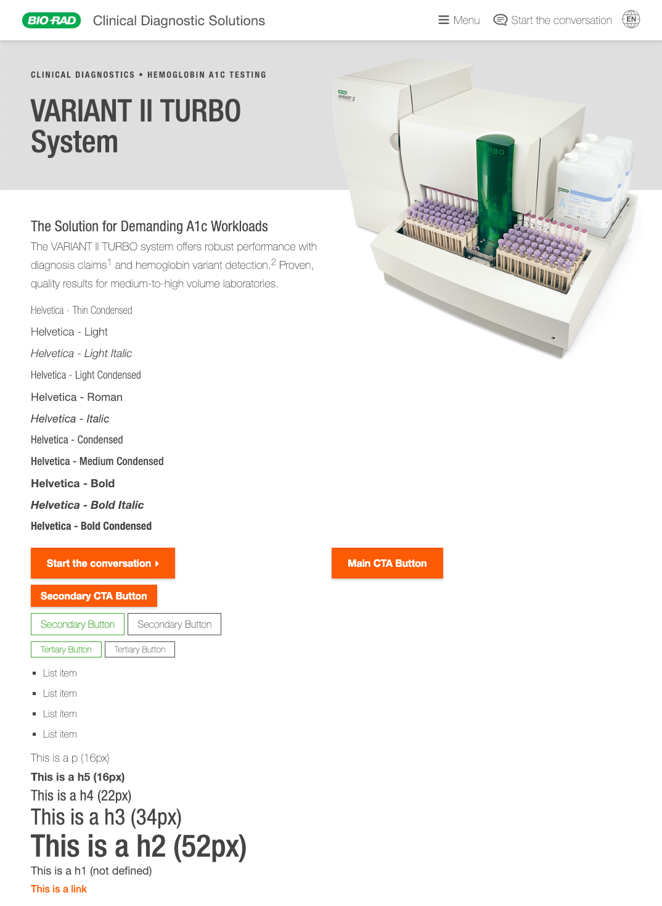
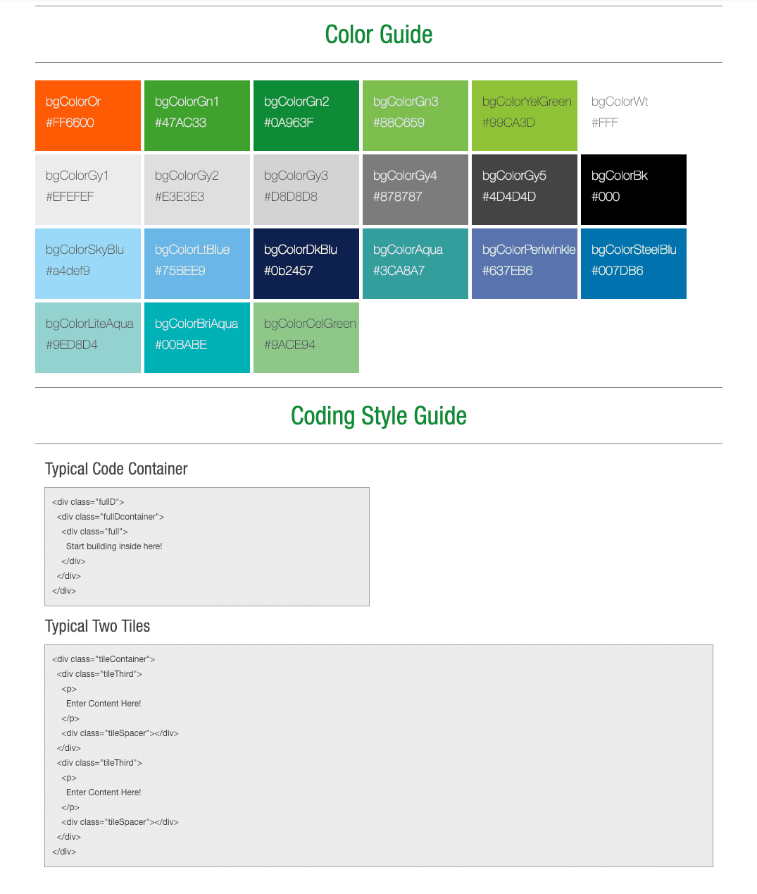
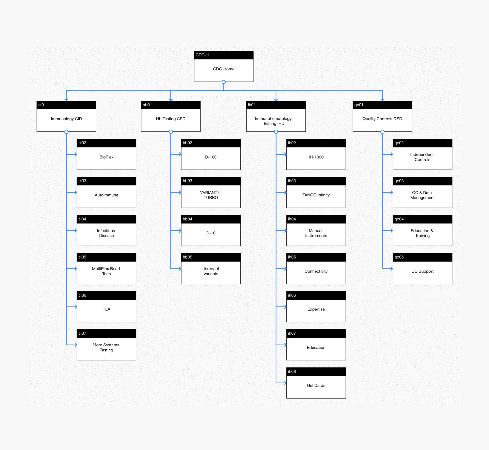
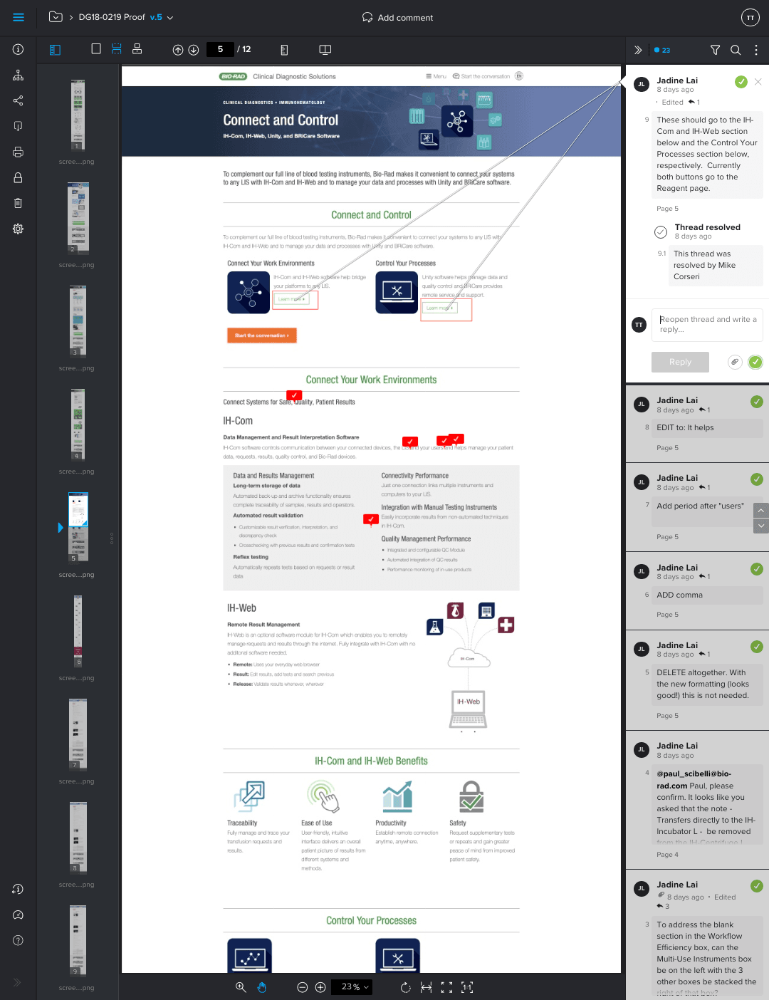
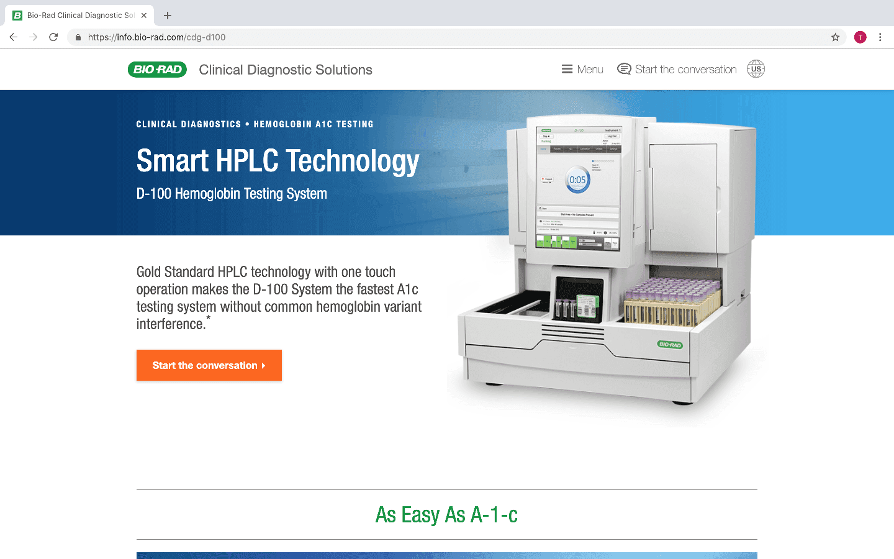
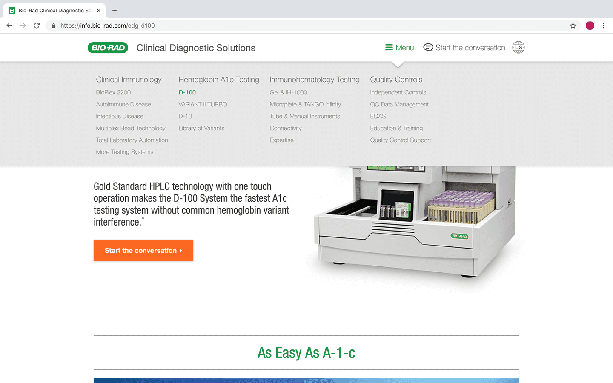
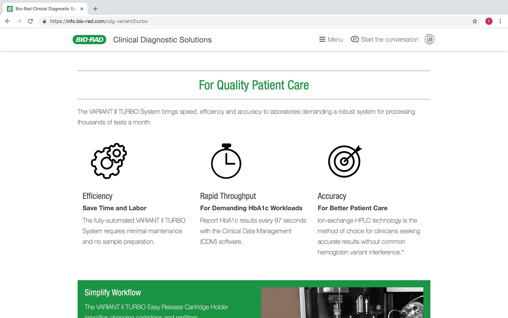
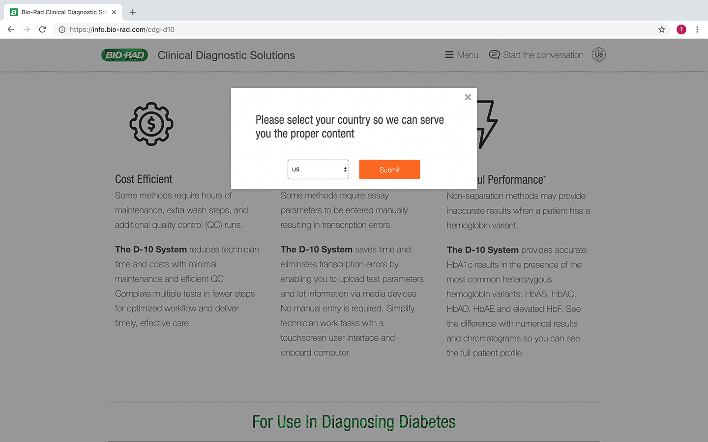

Bio‑Rad: Marcom Designs
Implementation of design standards and creation of solutions website for Bio‑Rad's Marcom team
Trang Tran

About Bio‑Rad
Bio‑Rad is a manufacturer of products for life science research and clinical diagnostics markets. In the past few years, Bio‑Rad began focusing on creating a modern customer experience beyond just desktop. The Global Marcom team channeled their efforts into building a responsive microsite to showcase their top-selling systems from the Clinical Diagnostics Group (CDG) and Life Sciences Group (LSG). They now started caring about implementing actual design and development standards to help their goals.
The Problem
Bio‑Rad has a reputation that precedes them, one that tells of their lack of modern technology. The company does not use the latest and greatest in design and development resources, but that's because they target an audience that doesn't care about those things. I was part of an immature web team where we did not have established code repositories and components for design. We were tasked to create the microsite, maintain its code, distribute it, and supply the marcom department with other web dev/design efforts.
I was the main UX designer of the Marcom web team and worked with another hybrid developer/designer. Our responsibilities include taking concepts from start to finish, design and implementation, and maintenance of our code library and documentation. Besides the microsite, I also supported the marketing team by designing and building internal resource tools.
Who are the personas?
We have two types of users of our projects: customers and the internal marketing/sales team. Our customers are scientists and clinical diagnostics specialists who are not that tech savvy, and tend to use Internet Explorer. They are the main consumers of the microsite who make key decisions whether to purchase a line of products or not. The marketing/sales team are also not technical, so all of our tools for them are basic.
51 years old
Chief Medical Officer
As CMO, Amar has a lot of decision-making power when it comes to purchasing equipment for his lab. He does not have a good grasp on web technologies, therefore uses Internet Explorer as his default browser. He doesn't have a clue where to go to learn about Bio‑Rad equipment.
Wants to quickly get information about the best products all in one place. Does not want to rely on brochures and print collateral.
Gets overwhelmed with new technology easily. Feels that upgrading technology to the most current is a lot of work.
The Marcom Design Library
We inherited a design system that was still a work in progress. Because about a third of our users browse our material with Internet Explorer, we couldn't use modern browser-supported capabilities like flexbox and grid. Instead, we created a proprietary component library. My team maintained this system and distributed it with the other marcom teams within the department.
 While the microsite would assume its own brand style, we stayed within the boundaries to make sure that it was easily recognizable with the Bio‑Rad brand. We added more components as well as simpler code into the guide. My team was also involved in educating the other marketing departments to show them how to use our templates. The leading Global Marcom Team adopted our template and are customizing it for their landing pages.
Sitemap
We worked closely with multiple project managers who were each in charge of a different product line. Collaborating with them helped us form the structure of how the microsite would be presented. However, not all countries/regions will have access to every equipment on the website. To support our users, we created two branches for the website; one for the US and one for outside the US (OUS). Although scrappy, a functional gating system was was built from scratch to help redirect users to the right products. This was the optimal experience for users because it would prevent them from seeing products that they cannot purchase.
Product Messaging
The internal copywriter was responsible for all the content and messaging on our pages. Once that version is done, we use ProofHQ to share it with the marketing team to get their copy edits. The approved iteration then goes to Regulatory.
Our code was built locally and then hosted on Marketo where logic is linked up to track engagement from users. There are technical limitations working within Marketo due to their poor development environment. To combat this, our microsite was developed with a few hacks to overwrite some of Marketo's baked-in functions.
   Design and develop a microsite for a company that has not incorporated modern trends in user experience
Collaborated with product marketers to learn about users
Worked with fellow web developer/designer to brainstorm better code and designs for layout
Worked on bug fixes, maintained CSS, and created original assets such as icons and components for our library
Worked closely with in-house copywriters to ensure proper product messaging
Built website in code editor and then migrated to Marketo
Tested microsite on major browsers (desktop and mobile) and progressed through QA
Introducing Bio‑Rad's First Responsive Website
The microsite was launched in early February and received global praise from within the different departments of the company. This was a huge milestone as it allowed product managers to finally have a responsive resource to show their customers. It was also a statement to customers to indicate that the company is now pushing towards a better user experience.
The Takeaway
I felt that one of the biggest struggles we had was trying to help the team break away from the the slow-moving and antiquated processes of Bio‑Rad. At times, it took a lot of effort to defend and explain our design and dev decisions to stakeholders and fellow marcom team members. Luckily, I was able to work within a nimble team and gain support from my manager to pursue what we thought was best for our users.